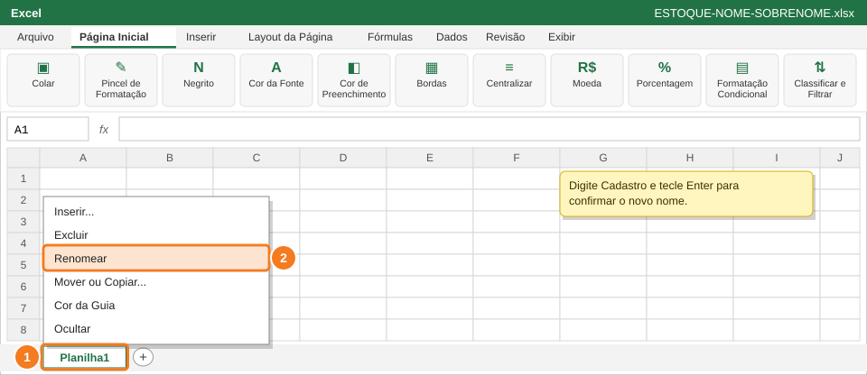
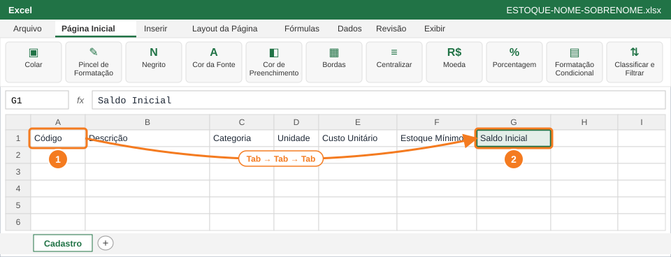
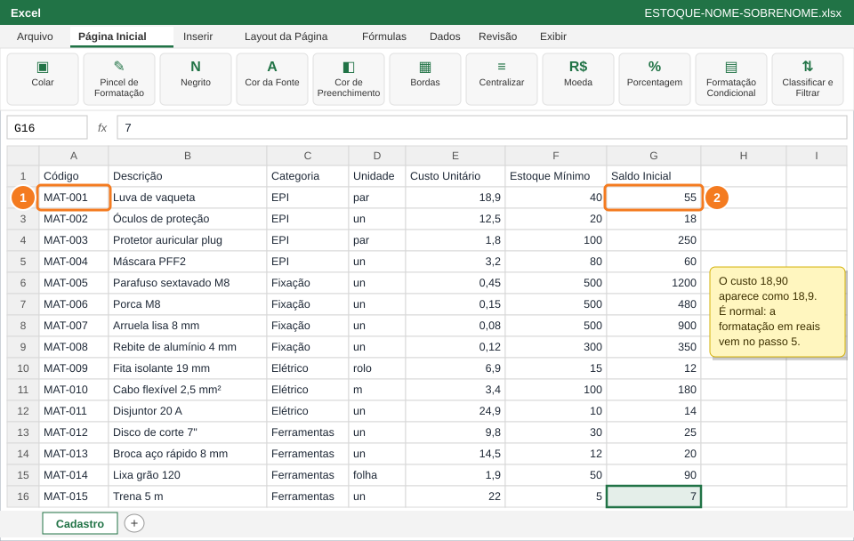
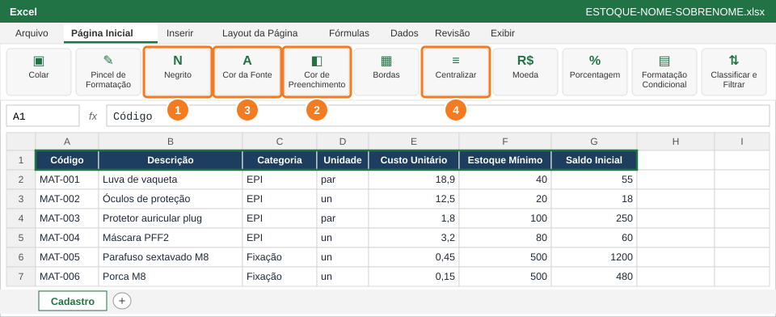
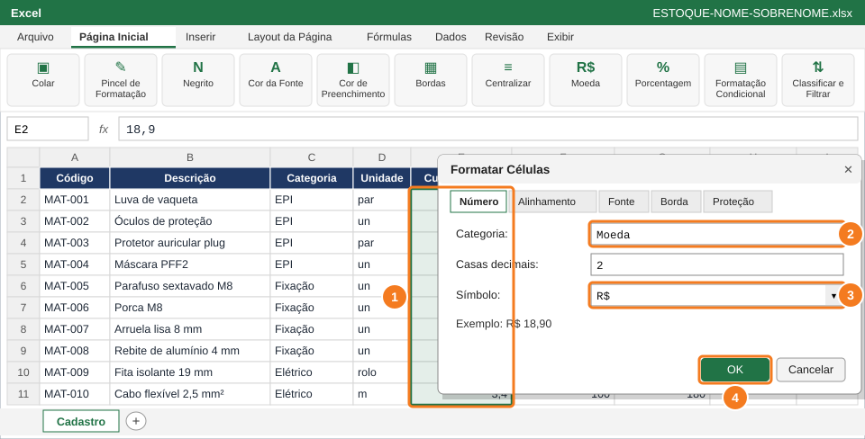
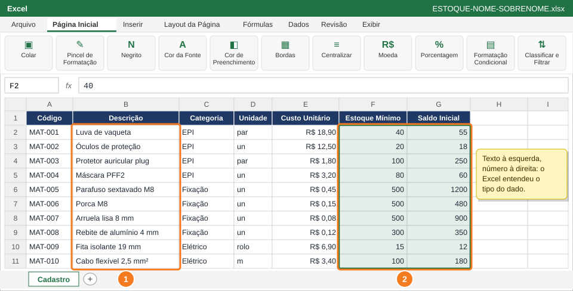
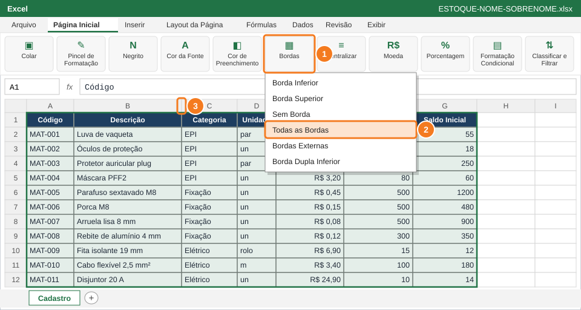
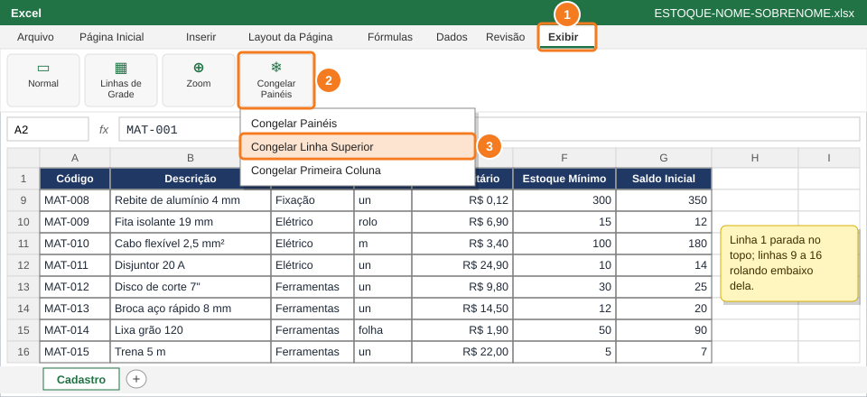

Criar a aba Cadastro com os 15 materiais do almoxarifado e deixá-la com aparência profissional: valores em reais, quantidades inteiras, cabeçalho destacado, bordas e títulos sempre visíveis.
Você vai usar
Renomear aba
Formatar Células (Ctrl+1): Moeda e Número
Negrito, Cor de Preenchimento, Cor da Fonte e Bordas
AutoAjuste da largura das colunas
Congelar Painéis
Aba de trabalho:Cadastro (nova) · Slides de apoio: Arquivo 4 — slides 10–12, 16, 20–21
1
Abra o Excel, salve o arquivo e renomeie a aba

Clique com o botão direito na aba (1) e escolha Renomear (2).
Abra o Excel e escolha Pasta de trabalho em branco.
Salve logo no início: Ctrl+B (ou Arquivo → Salvar como) com o nome ESTOQUE-NOME-SOBRENOME, trocando pelo seu nome.
Clique com o botão direito na aba Planilha1, no rodapé da tela (1).
Escolha Renomear (2), digite Cadastro e tecle Enter.
💡 DicaSalve ao terminar cada questão com Ctrl+B. Se o computador travar, você não perde o trabalho.
🐧 No LibreOffice CalcClique com o botão direito na aba → Renomear planilha.
2
Digite os títulos das colunas

Comece em A1 (1) e termine em G1 (2), usando Tab entre as colunas.
Copia só os dados da tabela (sem fórmulas nem formatação).
Clique na célula A1 (1).
Digite os títulos, um em cada coluna, usando Tab para passar à próxima: Código, Descrição, Categoria, Unidade, Custo Unitário, Estoque Mínimo, Saldo Inicial.
Ao terminar em G1 (2), tecle Enter.
⚠️ AtençãoEscreva os títulos exatamente como estão, com acentos. O professor confere a estrutura da planilha.
3
Digite os 15 materiais

Digite linha por linha: Tab entre as colunas (1) e Enter no fim da linha (2).
Na tabela Dados para digitar logo abaixo, clique em Copiar e cole na célula A1 da aba Cadastro (ou digite à mão): os 15 itens ocupam as linhas 2 a 16. Só os dados são copiados; a formatação e as fórmulas você faz nos próximos passos.
Digite o custo com vírgula (ex.: 18,90) e as quantidades sem ponto de milhar (ex.: 1200).
Use Tab entre as colunas (1) e Enter no fim de cada linha (2): o Excel volta sozinho para a coluna A da linha de baixo.
Aba Cadastro (Questão 1): digite nas linhas 2 a 16
Colunas da planilha: A, B, C, D, E, F, G.
Código
Descrição
Categoria
Unidade
Custo Unitário
Estoque Mínimo
Saldo Inicial
MAT-001
Luva de vaqueta
EPI
par
18,90
40
55
MAT-002
Óculos de proteção
EPI
un
12,50
20
18
MAT-003
Protetor auricular plug
EPI
par
1,80
100
250
MAT-004
Máscara PFF2
EPI
un
3,20
80
60
MAT-005
Parafuso sextavado M8
Fixação
un
0,45
500
1200
MAT-006
Porca M8
Fixação
un
0,15
500
480
MAT-007
Arruela lisa 8 mm
Fixação
un
0,08
500
900
MAT-008
Rebite de alumínio 4 mm
Fixação
un
0,12
300
350
MAT-009
Fita isolante 19 mm
Elétrico
rolo
6,90
15
12
MAT-010
Cabo flexível 2,5 mm²
Elétrico
m
3,40
100
180
MAT-011
Disjuntor 20 A
Elétrico
un
24,90
10
14
MAT-012
Disco de corte 7"
Ferramentas
un
9,80
30
25
MAT-013
Broca aço rápido 8 mm
Ferramentas
un
14,50
12
20
MAT-014
Lixa grão 120
Ferramentas
folha
1,90
50
90
MAT-015
Trena 5 m
Ferramentas
un
22,00
5
7
💡 DicaConfira a tabela da capa com calma. Um número errado aqui muda os resultados das próximas questões.
✅ VerifiqueOs números ficaram alinhados à direita. Se algum ficou à esquerda, o Excel entendeu como texto: apague e digite de novo, sem espaços.
4
Destaque o cabeçalho

Com A1:G1 selecionado: Negrito (1), Cor de Preenchimento (2), Cor da Fonte (3) e Centralizar (4).
Copia só os dados da tabela (sem fórmulas nem formatação).
Selecione A1:G1: clique em A1 e arraste até G1.
Clique em Negrito (1).
Clique na setinha de Cor de Preenchimento (2) e escolha um azul-escuro.
Clique na setinha de Cor da Fonte (3) e escolha Branco.
Clique em Centralizar (4).
💡 DicaNo Excel em português, o Negrito é o botão N. Atalho: Ctrl+N.
5
Formate o Custo Unitário como Moeda

Selecione E2:E16 (1), escolha Moeda (2) com símbolo R$ (3) e clique em OK (4).
Copia só os dados da tabela (sem fórmulas nem formatação).
Selecione E2:E16, a coluna Custo Unitário sem o título (1).
Tecle Ctrl+1 para abrir Formatar Células.
Na aba Número, escolha a categoria Moeda (2), com 2 casas decimais e símbolo R$ (3).
Clique em OK (4).
⚠️ AtençãoNunca digite R$ dentro da célula. Isso transforma o número em texto e as contas param de funcionar.
💡 DicaA formatação muda só a aparência: o valor guardado continua sendo 18,9.
6
Deixe as quantidades como números inteiros

Texto fica à esquerda (1) e número fica à direita (2).
Copia só os dados da tabela (sem fórmulas nem formatação).
Selecione F2:G16 (Estoque Mínimo e Saldo Inicial).
Ctrl+1 → aba Número → categoria Número, com 0 casas decimais → OK.
Observe: as descrições ficam alinhadas à esquerda (1) e as quantidades à direita (2).
✅ VerifiqueNenhum número das colunas F e G aparece com vírgula ou alinhado à esquerda.
7
Coloque bordas e ajuste a largura das colunas

Bordas (1) → Todas as Bordas (2). Depois, duplo clique na divisa entre as letras (3).
Copia só os dados da tabela (sem fórmulas nem formatação).
Selecione a tabela inteira: A1:G16.
Clique na setinha do botão Bordas (1) e escolha Todas as Bordas (2).
Para o AutoAjuste, aponte o mouse para a divisa entre as letras das colunas, por exemplo entre B e C (3), até o cursor virar ↔. Dê duplo clique.
Repita nas colunas em que o texto aparecer cortado.
💡 DicaPara ajustar tudo de uma vez: selecione as colunas A até G clicando nas letras e dê duplo clique em qualquer divisa entre elas.
8
Congele a linha dos títulos

Exibir (1) → Congelar Painéis (2) → Congelar Linha Superior (3). Veja que, ao rolar, a linha 1 continua no topo.
Clique na guia Exibir (1).
Clique em Congelar Painéis (2) e escolha Congelar Linha Superior (3).
Role a planilha para baixo com o mouse: o cabeçalho continua visível.
Salve: Ctrl+B.
✅ VerifiqueAo rolar até a linha 40, os títulos da linha 1 continuam na tela.
🐧 No LibreOffice CalcExibir → Congelar células → Congelar primeira linha.
📋 Como esta questão será avaliada
Critério
Pontos
Os 15 materiais e os títulos digitados corretamente
0,5
Custo Unitário em Moeda (R$) e colunas F e G como número inteiro
0,4
Cabeçalho azul-escuro com fonte branca em negrito e bordas na tabela